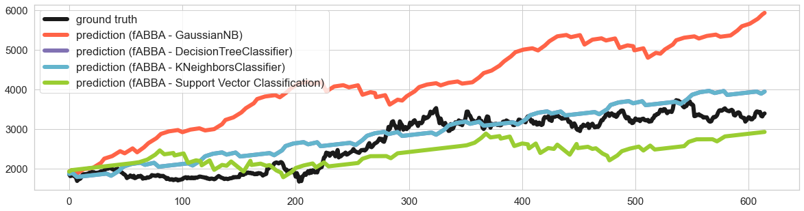

Time series forecasting with symbolic representation
slearn package contains the fast symbolic representation method, namely SAX and fABBA (more methods will be included).
Summmary
You can select the available classifiers and symbolic representation method (currently we support SAX and ABBA) for prediction. Similarly, the parameters of the chosen classifier follow the same as the scikit-learn library. We usually deploy ABBA symbolic representation, since it achieves better forecasting against SAX.
slean leverages user-friendly API, time series forecasting follows:
Step 1: Define the windows size (features size), the forecasting steps, symbolic representation method (SAX or fABBA) and classifier.
Step 2: Transform time series into symbols with user specified parameters defined for symbolic representation.
Step 3: Define the classifier parameters and forecast the future values.
Now we illustrate how to use slearn with symbolic representation to forecast time series step by step.
First of all, we set the number of symbols you would like to predict and load libraries and data..
import pandas as pd
import numpy as np
import seaborn as sns
import matplotlib.pyplot as plt
from slearn import *
time_series = pd.read_csv("Amazon.csv") # load the required dataset, here we use Amazon stock daily close price.
ts = time_series.Close.values
step = 50
we start off with initializing the slearn with fABBA and GaussianNB classifier, setting windows size to 3 and step to 50:
sl = slearn(method='fABBA', ws=3, step=step, classifier_name="GaussianNB") # step 1
Next we transform the time series into symbols with method set_symbols:
sl.set_symbols(series=ts, tol=0.01, alpha=0.2) # step 2
Then we predict the time series with method predict:
abba_nb_pred = sl.predict(var_smoothing=0.001) # step 3
Together, we combine the code with three classifiers:
import pandas as pd
import numpy as np
import seaborn as sns
import matplotlib.pyplot as plt
from slearn import * # old code, now updated
np.random.seed(0)
time_series = pd.read_csv("doc/Amazon.csv")
ts = time_series.Close.values
length = len(ts)
train, test = ts[:round(0.9*length)], ts[round(0.9*length):]
sl = slearn(method='fABBA', ws=8, step=1000, classifier_name="GaussianNB")
sl.set_symbols(series=train, tol=0.01, alpha=0.1)
abba_nb_pred = sl.predict(var_smoothing=0.001)
sl = slearn(method='fABBA', ws=8, step=1000, classifier_name="DecisionTreeClassifier")
sl.set_symbols(series=train, tol=0.01, alpha=0.1)
abba_nn_pred = sl.predict(max_depth=10, random_state=0)
sl = slearn(method='fABBA', ws=8, step=100, classifier_name="SVC")
sl.set_symbols(series=train, tol=0.01, alpha=0.1)
abba_svc_pred = sl.predict(C=20)
min_len = np.min([len(test), len(abba_nb_pred), len(abba_nn_pred)])
plt.figure(figsize=(20, 5))
sns.set(font_scale=2, style="whitegrid")
sns.lineplot(data=test[:min_len], linewidth=6, color='c', label='ground truth')
sns.lineplot(data=abba_nb_pred[:min_len], linewidth=6, color='tomato', label='prediction (ABBA - GaussianNB)')
sns.lineplot(data=abba_nn_pred[:min_len], linewidth=6, color='m', label='prediction (ABBA - DecisionTreeClassifier)')
sns.lineplot(data=abba_svc_pred[:min_len], linewidth=6, color='yellowgreen', label='prediction (ABBA - Support Vector Classification)')
plt.legend()
plt.tick_params(axis='both', labelsize=25)
plt.show()
The result is as plotted below:
{kind=link}